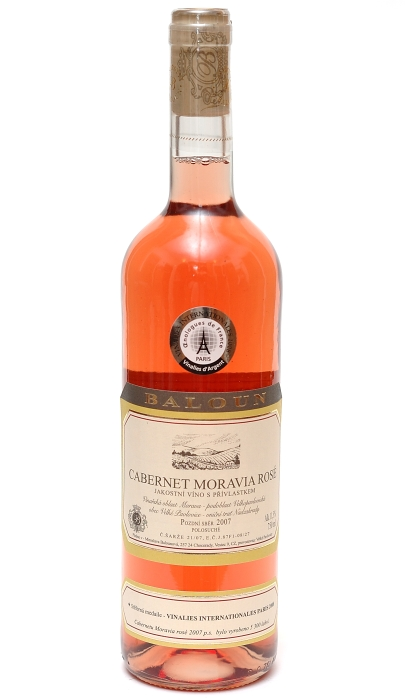
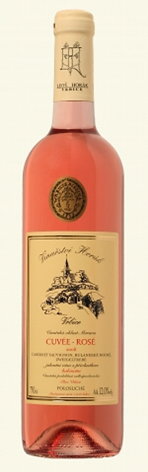

Stranka: | 1 |
| Cabernet Moravia pozdní sběr ročník 2007 | |||
| Výrobce | Baloun |  | |
| Dostupnost | Skladem | ||
| Oblast | Velkopavlovická | ||
| Objem | 0,75 l | 195,- Kč/Ks | |
| Obsah cukru | polosuché | Koupit | |
| Obsah alko. | 11,5 % | ||
| Charakteristika: | |||
| Barva vína je jemně růžová, s načervenalými odlesky. Víno má svěží výrazně ovocnou vůni připomínající kandované tropické ovoce. Chuť kopíruje vjem z ušlechtilé vůně. | |||
| Cuvée rose kabinetní ročník 2008 | |||
| Výrobce | Horák |  | |
| Dostupnost | Obvykle skladem | ||
| Oblast | Velkopavlovická | ||
| Objem | 0,75 l | 205,- Kč/Ks | |
| Obsah cukru | polosuché | Koupit | |
| Obsah alko. | 12 % | ||
| Charakteristika: | |||
| Barva vína je až světle jahodová. Vůně je velmmi intenzivní s výraznými ovocnými tóny. V chuti je víno jemné a svěží. Zejména maliny a jahody najdeme také v chuti. | |||
| Frankovka Klaret pozdní sběr ročník 2007 | |||
| Výrobce | Zborovský |  |
|
| Dostupnost | Obvykle skladem | ||
| Oblast | Velkopavlovická | ||
| Objem | 0,75 l | 198,- Kč/Ks | |
| Obsah cukru | polosuché | Koupit | |
| Obsah alko. | 12 % | ||
| Charakteristika: | |||
| Zabarvení je do lososorůžova. Vůně se projevuje svou lehkostí s nádechem lesních plodů. Podávejte lehce podchlazené mezi 6 až 8 stupni. | |||